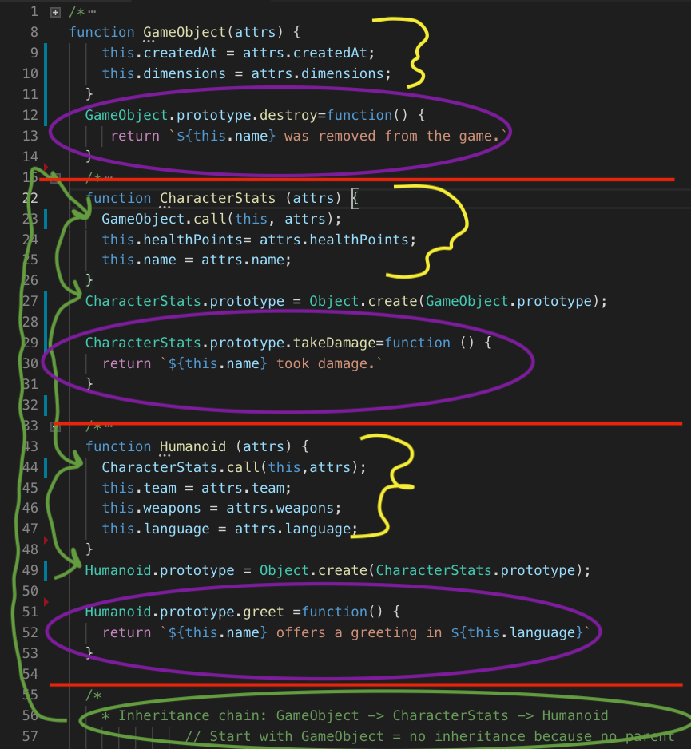
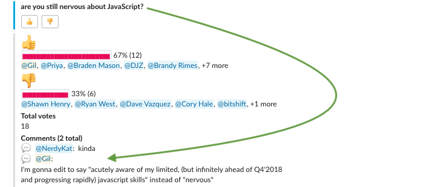
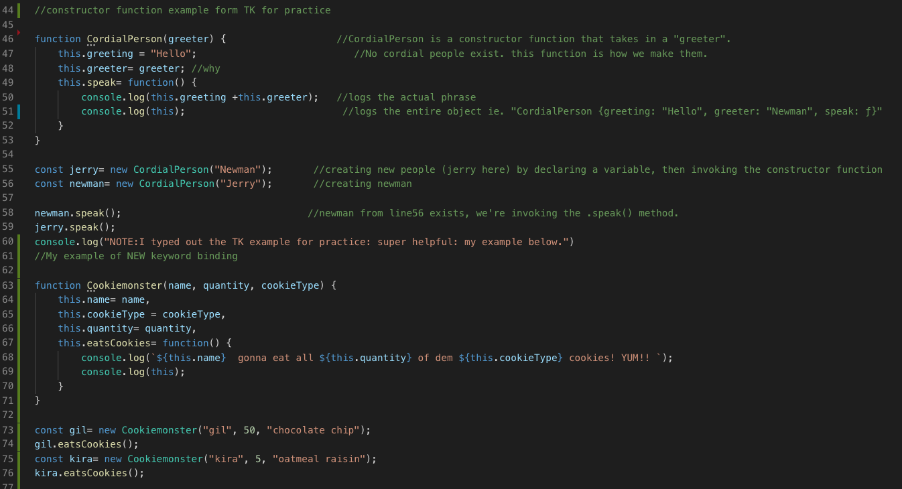
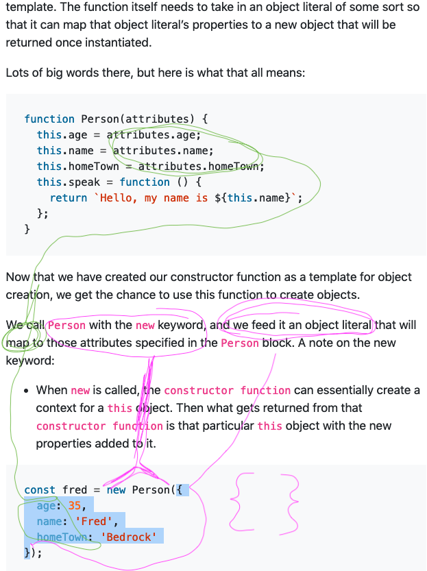
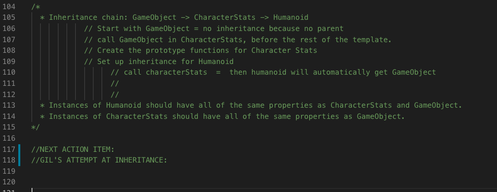
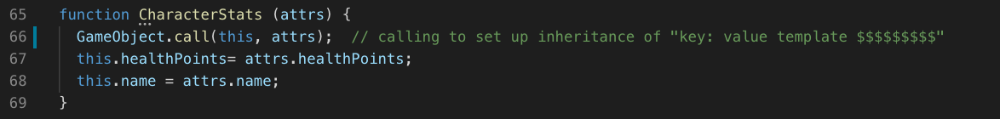

JS III : Binding, "This" and Prototypical Inheritance w/ call+ apply

RED SECTIONS == SECTION SEPERATORS
YELLOW==CONSTRUCTOR FUNCTIONS/ "OBJECT TEMPLATES"
PURPLE==ADDING A METHOD TO THAT OBJECT'S PROTOTYPE
GREEN== HIGHLIGHTING PROTOTYPE INHERITANCE CHAIN
NOTES
- binding
- Why use semi colons instead of colons in Constructor function templates?
- WTF is ATTRS? and why it's used
- How to use this.attr1 = attr1; this.attr2= attr2
- Breaking out methods into an object's prototype = ObjectName.prototype.methodName=function() {//code}
- using .call as the first line in a constuctor function to inherit key:value pairs from parent
- using object.create() to inherit prototypes
TOOLS
Quokka extension installed to help with live-logging in VSCODE h/t to Randy!
A poll from my Lambda Cohort:

ACUTELY AWARE -->
It was very useful to copy the Training kit example, follow it step by step, and write my notes IN the code as comments.
The Seinfield example is from the Training kit, my cookie monster example was crafted after understanding how it works.
Please don't tell my daughter I ate 10X the amount of cookies as she did, she'll be PISSED.


USING NEW AND CONSTRUCTOR FUNCTION: MAPPING FROM OBJECT LITERAL THAT IS FED TO ConstructorFunction ()
Following image is my drawings over the Lambda TK section on constructor functions.
this is when I understood creating a new Function, passing in and object of attributes getting mapped into the tempate.

Constuctor Function notes:
attrs, this.attrs1=attrs1; , why semicolons? and color:purple; breaking out method into prototype
set up styled template for these notes sheets!!!
My Original Version: understood constructor function from TK
pair programming with standup Ryan and ernesto, didn't really understand it super well
followup with PM / Randy to break down and compare both, answering my questions in comments
broke down how to attack the next problem, then set to struggle on it.
created this image / reviewed by making this page

NEW DATE --- COOL TOOL BUT NOT FOR THIS READ MORE LATER
INHERITANCE PLAN OF ATTACK

EXECUTION
Was able to follow that plan of attack and get 90% of the way there.
the last 10% was the hardest.
object.create has to be OUTSIDE the constructor function. I was writing it INSIDE.
(right below.call, above this.healthpoints/first keytemplate)
By moving those 3 lines of code outside the function, the entire thing worked.
Step 1- .Call() in first line of constructor function

On line 66, I call GameObjects (the parent object) and use .call.
I pass in "This" (the new Character Stats object this function is creating) and the attrs object.
This step includes all the "this.key=attrs.values" from the parent object in each new CharacterStats object
THE PROTOTYPE INHERITANCE IS A SEPERATE STEP, OUTSIDE THE CONSTRUCTOR FUNCTION
PROTOTYPE INHERITANCE via OBJECT.CREATE
KINDLY NOTE: Constructor function ends at 69 } and this starts at 71 : )

line 71 is the only active code
in english: " hey javscript... I'm talking about CharacterStats object, specifically, the prototype of that object.
Make it the same as whatever is passed in from the create method... in this case, the GameObject's prototype
THIS IS WHERE I'M MAKING THE PROTOTYPES THE SAME
A day late... but got it done...